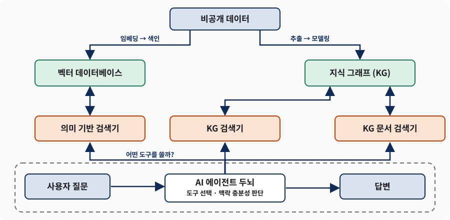
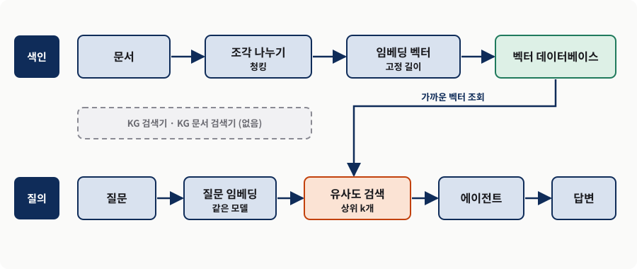
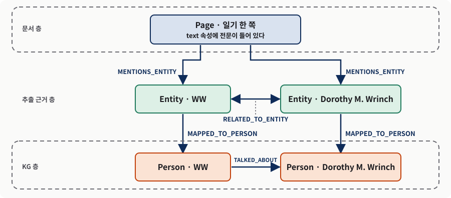
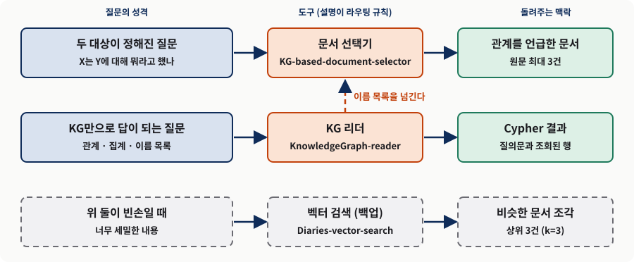
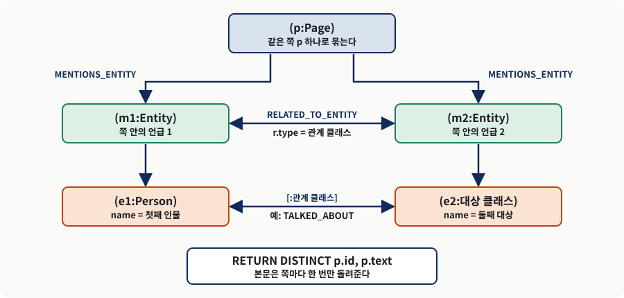
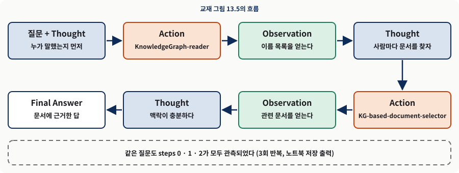
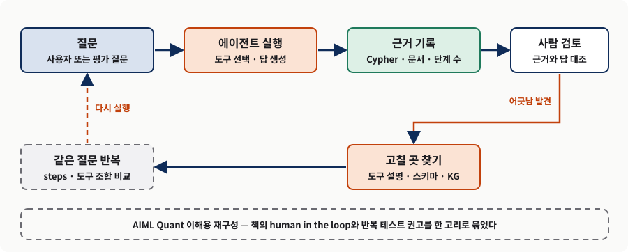

지식 그래프 기반 검색 증강 생성(Graph RAG)
벡터 RAG의 한계에서 KG 도구를 쥔 ReAct 에이전트까지
0. 핵심 요약
9~12장은 KG를 머신러닝의 입력으로 쓰는 이야기였다. 13장은 같은 KG를 사람의 질문에 답하는 근거로 쓴다. 출발점은 단순하다. 거대 언어 모델(LLM)은 "프랑스의 수도는?" 같은 질문에는 곧바로 맞게 답하지만, 정말 값어치 있는 질문은 다단계 추론, 개념 사이의 관계 패턴, 모델이 학습 중에 본 적 없는 최신·비공개 데이터 가운데 하나 이상을 요구한다. 환각, 지식 컷오프, 투명성 부재, 데이터 프라이버시 같은 문제는 모델을 키운다고 사라지지 않는다.
저자들의 해법은 검색 증강 생성(RAG)이다. 외부에서 질문과 관련된 맥락을 찾아 와 모델의 답을 그 범위 안에 묶는다. 초창기 RAG는 문서를 쪼개 임베딩하고 유사도로 꺼내는 벡터 검색이었는데, 이 방식은 문서를 서로 독립된 조각으로 다루고, 한 번 나오는 고유명사를 압축된 벡터 속에서 희석시키며, 여러 문서에 흩어진 답을 잇지 못한다. 그래서 저자들은 5~6장에서 만든 록펠러 아카이브 센터 KG를 끌어들인다. 이 KG는 일기 한 쪽(Page)이라는 문서 층과, 거기서 추출한 사람·조직·관계라는 KG 층이 서로 되짚어 갈 수 있게 이어진 구조여서, 관계로 문서를 특정하는 도구를 만들 수 있다.
이 리포트는 교재 인쇄값, 노트북에 저장된 출력, AIML Quant의 이해용 재구성을 구분해 적는다. 노트북 출력은 이번 준비에서 다시 실행한 값이 아니라 저장된 값이며, 그 이유와 재실행 조건은 부록 A에 정리했다.
- 문제 — 벡터 검색만으로는 질문에 나온 인물과 관계를 짚어 맥락을 주지 못하고, 에이전트가 도구를 고르는 일도 흔들린다.
- 메커니즘 — 문서 층과 KG 층이 이어진 그래프에서, 관계로 문서를 특정하는 도구와 Cypher로 KG를 직접 읽는 도구를 ReAct 에이전트가 고른다.
- 판단 — 두 대상이 정해진 질문은 문서 선택기, KG만으로 되는 질문은 KG 리더, 앞의 둘이 비면 벡터 검색을 백업으로 쓰고, 근거는 사람이 확인한다.
| 단계 | 질문 | 저자의 주장 | 실무 판단 |
|---|---|---|---|
| 13.1–13.2 | 에이전트란 무엇이고 기억만으로 충분한가 | 에이전트는 LLM·프롬프트·도구의 조합이고, 기억은 메시지 리스트 하나다 | 기억만 가진 에이전트는 우리 데이터를 모르므로 일반론만 낸다 |
| 13.3 | 운영 환경에서 무엇이 막는가 | 환각·최신성·투명성·프라이버시·비용·편향이 벽이다 | 앞의 넷은 검색으로 맥락을 주어 겨냥할 수 있다 |
| 13.4.1 | RAG는 무엇을 하는가 | 외부 맥락으로 답의 범위를 제한하는 근거화 기법이다 | 확률적 모델이라 사람을 루프 안에 둔다 |
| 13.4.2 | 벡터 RAG는 어디서 실패하는가 | 조각 파편화·확장성·임베딩·잡음·누락이 한계다 | 질문의 고유명사가 상위 문서에 있다는 보장이 없다 |
| 13.4.3 | KG를 끌어들이면 무엇이 달라지는가 | 텍스트 속성과 텍스트 짝지음을 겸한 KG는 관계로 문서를 특정한다 | 관계를 먼저 그래프에서 특정한 뒤 그 관계를 언급한 문서만 꺼낸다 |
| 13.4.4 | 도구를 누가 고르는가 | ReAct 에이전트가 Thought·Action·Observation을 반복한다 | 도구 설명이 곧 라우팅 규칙이므로 설명을 설계하고 반복 테스트한다 |
| 13.4.5 | 실제로 쓸 만한가 | 집계 질문처럼 문서에 통째로 없는 답은 KG가 잇는다 | 같은 질문도 단계 수가 달라지므로 근거를 사람이 확인한다 |
세 가지를 구분한다. 교재 인쇄값은 원서와 해설판에 적힌 수치·출력이다. 노트북 저장 출력은 교재 폴더의 노트북에 남은 실행 결과로, 임베딩(Ollama nomic-embed-text 768차원)과 채팅 모델(gpt-5.4-mini)이 책(OpenAI 1536차원 계열, gpt-4o)과 달라 점수와 문장이 다르다. 이해용 재구성은 도해와 작은 예처럼 AIML Quant가 덧붙인 것이다. 이번 준비에서는 Neo4j·채팅 모델·임베딩 서비스를 다시 띄우지 못했으므로 어떤 실험도 새로 실행하지 않았다.
이 장의 문 열기 — 4부 소개와 개념 지도
4부의 첫 장은 무엇을 약속하고, 이 장의 개념 지도는 어떤 구도로 읽는가?
4부 소개 — KG와 LLM으로 완성하는 정보 검색
책의 마지막 파트는 KG와 LLM의 결합이 실무적인 정점에 닿는 곳이다. 초점은 하나다. KG를 정답의 근거(ground truth)로 삼아 LLM의 능력을 끌어올리면서, 그럴듯하지만 틀린 사실을 지어내는 환각을 막는 시스템을 실제로 구현하는 것이다. 13장은 그 첫걸음으로 KG와 LLM을 RAG로 결합한다. 14장은 사용자 의도 탐지와 스키마 번역, 전문가 지식의 주입으로 도메인 전문가처럼 추론하는 질의응답을 다루고, 15장은 LangGraph와 Streamlit으로 여러 전문 에이전트가 질문 처리의 각 측면을 나누어 맡는 모듈형 파이프라인을 완성한다.
이 장에서 다루는 세 가지
- LLM을 쓸모 있는 AI 에이전트로 만드는 법
- 맥락으로 LLM을 근거에 묶는 검색 증강 생성(RAG)
- KG 기반 RAG 시스템을 실제로 만드는 법
저자들은 2023년을 AI가 세상을 뒤집어 놓은 해로 규정한다. 2022년 말 GPT-3.5가 공개되면서 NLP를 하던 사람들의 일하는 방식이 바뀌었다. 다운스트림 작업마다 몇 달씩 걸려 맞춤형 데이터셋과 모델을 만들 필요가 줄고, 약간의 영리한 프롬프트 엔지니어링만으로 누구나 NLP 애플리케이션을 만들 수 있게 되었다. 하지만 LLM이 모든 문제를 푸는 마법은 아니다. 실제 기업 환경에서 쓰려면 할 일이 많이 남았고, 그 깨달음에서 AI 에이전트라는 개념과 그것을 구현하는 라이브러리, 그리고 LLM을 운영·관리하는 LLMOps가 등장했다.
개념 지도 — 한 문서에서 두 갈래
2~3부는 비공개 데이터를 KG로 바꾸는 법을 보였다. 이제 그렇게 만든 KG를 입력으로 동작하는 챗봇을 만든다. 그림 1은 그 구도를 한 장에 담는다. 맨 위의 비공개 데이터에서 두 갈래가 갈라진다. 한 갈래는 임베딩되어 벡터 데이터베이스에 색인되고, 다른 갈래는 엔티티와 관계로 추출되어 KG가 된다. 사용자의 질문은 AI 에이전트의 두뇌로 들어가고, 두뇌는 의미 기반 검색기·KG 검색기·KG 문서 검색기 가운데 무엇을 쓸지, 그리고 맥락이 답을 만들기에 충분한지를 반복해서 판단한다.

왼쪽 갈래는 벡터 검색, 오른쪽 갈래는 KG 검색이다. 에이전트의 점선 상자 안에서 도구 선택과 맥락 충분성 판단이 반복된다. 출처: 교재 그림 13.1을 한국어 라벨로 재구성(원본 위치 보존).이 그림이 이후 모든 절의 지도다. 13.4.2는 오른쪽 갈래를 지운 구성(벡터 갈래만)이 어디서 막히는지를 보이고, 13.4.3은 지운 갈래를 되살려 도구 세 개를 쥔 에이전트를 만든다.
13.1 AI 에이전트 — 스스로 판단하는 자율 시스템
- AI 에이전트는 일반 프로그램과 무엇이 다른가?
- 어떤 질문에서 모델 단독 응답의 비용이 정당화되는가?
자율성·적응성·지능을 가진 주체
AI 에이전트는 환경과 상호작용하며 구체적이고 복잡한 작업을 수행하도록 설계된 자율적 주체다. 미리 정해진 명령 집합을 그대로 따르는 전통적 프로그램과 달리, 어느 정도의 자율성과 적응성을 갖추어 스스로 결정을 내리고 경험에서 배우며 변하는 상황에 실시간으로 반응한다.
저자들은 챗봇 하나로 논의를 연다. "프랑스의 수도는?"에는 상위권 LLM이 즉시 정확하게 답한다. 그러나 이런 질문이 수천억 개 파라미터 모델을 만들고 운영하는 막대한 비용을 정당화하는 투자 대비 수익을 낼까? 아마 아니다. 정말로 값어치 있는 질문과 작업은 다음 가운데 최소한 하나를 요구한다.
- 고급 다단계 추론 — 연역 과제처럼, 또는 중간 출력에 따라 원래 계획을 스스로 조정해야 하는 적응형 시스템처럼.
- 개념 사이의 깊은 관계 패턴 이해 — 소셜 네트워크의 인플루언서나 공급망의 병목 지점처럼.
- 최신의, 대개 외부이고 비공개인 데이터에 대한 접근 — 이는 흔히 LLM의 지식 컷오프, 곧 학습 데이터의 시점 한계라 불린다. 모델이 너무 커서 자주 재학습할 수 없기에 내일 날씨에도, 민감한 내부 데이터에도 답하지 못하고, 접근 권한이 다른 여러 사용자(페르소나)를 다루면 더 까다롭다.
| 요구 | 예 | 이 장에서 나타나는 곳 |
|---|---|---|
| 고급 다단계 추론 | 수학 퍼즐, 중간 출력에 따라 계획을 바꾸는 적응형 시스템 | ReAct 에이전트가 KG 리더의 결과를 보고 다음 도구를 고른다(13.4.5) |
| 개념 사이의 깊은 관계 패턴 | 토론 주제의 인플루언서 찾기, 공급망의 병목 짚기 | "사이클로트론 연구비의 인플루언서는 누구인가"에 6장 KG가 답한다 |
| 최신·외부·비공개 데이터 | 내일 날씨 예보, 접근 권한이 사용자마다 다른 내부 데이터 | 록펠러 아카이브 센터 일기 150쪽, 모델이 학습 중에 본 적 없는 자료 |
여러 에이전트는 역할극이다
콘텐츠 작성 어시스턴트를 떠올려 보자. 사람이라면 주제를 조사하고(기사·블로그·책, 위키피디아 같은 지식 베이스), 초안을 쓰고, 동료의 검토를 받고, 발행 전에 다듬는다. 이 과정이 그대로 시스템 설계가 된다. 조사를 맡는 리서처(Researcher), 쓰는 주제에 따라 여러 명의 라이터(Writer), 검토를 맡는 리뷰어(Reviewer)로 에이전트를 나누면, 서로 다른 에이전트(플레이어)가 전문화된 역할을 맡아 하나의 목표를 위해 소통하는 일종의 롤플레잉이 된다.
이 장이 만드는 것은 위의 다중 에이전트가 아니라 도구를 여러 개 가진 에이전트 하나다. 서로 다른 전문 에이전트가 질문 처리의 측면을 나누어 맡는 구성은 4부 소개에서 15장(LangGraph)의 몫으로 예고된다. 교재 그림 13.1의 "AI 에이전트"는 한 개의 두뇌 + 프롬프트 + 도구 집합이다.
에이전트는 호출마다 판단을 하므로 비용과 지연이 늘고 결과가 흔들릴 수 있다. 질문과 처리 절차가 고정되어 있다면 정해진 파이프라인(검색 한 번, 생성 한 번)이 더 싸고 재현하기 쉽다. 어떤 도구를 쓸지 사전에 정할 수 없을 때에만 에이전트의 자율성이 값을 한다. 이 판단 기준은 교재의 문장이 아니라 AIML Quant의 보충이다.
13.2 LLM과 대화하기 — 기억을 가진 챗봇 만들기
- 사용자와 자유롭게 대화하는 챗봇에는 무엇이 필요한가?
- 기억을 가진 에이전트가 우리 데이터에 대해 답할 수 있는가?
필요한 것은 둘뿐이다
가장 단순한 시나리오부터 본다. 사용자가 LLM과 자유롭게 대화하고, 첫 질문 뒤에 대화하듯 후속 질문을 이어간다. 이런 에이전트에는 사전 학습된 LLM에 대한 접근, 그리고 지금까지 오간 질문과 답을 모두 기억해 대화다운 경험을 만드는 메모리 두 가지만 있으면 된다. 아래 Listing 13.1처럼 클래스 하나로 쓸 수 있다.
Listing 13.1 기억을 갖춘 대화형 AI 에이전트
self.messages가 에이전트의 메모리다. 질문이 오면 사용자 메시지를 붙이고, 답이 나오면 어시스턴트 메시지를 붙인 뒤 돌려준다. 호출할 때마다 전체 이력을 모델에 다시 보낸다.
import os
from openai import OpenAI
from dotenv import load_dotenv
_ = load_dotenv()
class Agent:
def __init__(self, model: str = "gpt-4o-mini", system: str = None):
self.model = model
self.system = system
self.messages = list()
self.client = OpenAI(api_key=os.environ['OPENAI_API_KEY'])
if self.system is None or len(self.system) == 0:
self.system = "You are an AI assistant providing straightforward concise answers."
self.messages.append({"role": "system", "content": self.system})
def __call__(self, message: str) -> str:
self.messages.append({"role": "user", "content": message})
answer = self.execute()
self.messages.append({"role": "assistant", "content": answer})
return answer
def execute(self) -> str:
completion = self.client.chat.completions.create(
model=self.model,
temperature=0,
messages=self.messages)
return completion.choices[0].message.content
if __name__ == "__main__":
agent = Agent()
q = "Who are the top influencers of cyclotron funding?"
print(f"> Question: {q}\n> Answer: {agent(q)}")
q = "And in the context of 1930s, related to the Rockefeller Foundation?"
print(f"> Question: {q}\n> Answer: {agent(q)}")메모리는 화려한 장치가 아니라 리스트 하나다. 모델은 상태가 없으므로 "기억"은 전적으로 클라이언트가 만든다. 에이전트는 모델 버전과 시스템 메시지로 초기화되고, OpenAI API 키는 .env의 환경 변수로 받는다. 저자들은 단순함을 위해 이를 평범한 파이썬 스크립트로 돌리고, 처음 질문 뒤에 맥락을 좁히는 후속 질문을 던진다.
Listing 13.2 Listing 13.1 대화의 출력(교재 인쇄값, 요지 발췌)
첫 질문에는 기관 중심의 일반론이, 맥락을 좁힌 둘째 질문에는 사람 이름이 돌아온다. 아래는 교재 출력의 앞머리와 사람 목록만 옮긴 것이다.
> Question: Who are the top influencers of cyclotron funding?
> Answer: The top influencers of cyclotron funding typically include
government agencies, research institutions, private foundations, and
industry stakeholders. Key players may include:
1. National Institutes of Health (NIH) ...
2. Department of Energy (DOE) ...
3. National Science Foundation (NSF) ...
... (민간 재단, 대학·연구기관, 제약사)
> Answer: In the context of the 1930s, the Rockefeller Foundation played a
significant role in funding scientific research, including advancements in
nuclear physics and cyclotron development. Key influencers ...
1. John D. Rockefeller Jr. ...
2. Vannevar Bush ...
3. Ernest O. Lawrence ...첫 답은 정확하지만 매우 두루뭉술하다. 맥락을 밝힌 후속 질문에는 더 나은 답이 나오고, 거기서 익숙한 두 이름, 어니스트 O. 로런스와 배니바 부시를 발견한다(5~6장의 KG에서 본 이름이다). 놀랄 일은 아니다. 생짜(out-of-the-box) 모델은 우리가 근거로 삼기를 기대하는 그 데이터를 직접 보지 않는 한 구체적인 답을 내놓을 수 없다. 복잡도를 하나씩 더해 에이전트를 처음부터 만들 수도 있지만, 다행히 에이전트와 함께 거대한 엔지니어링 생태계가 발전했기에 그럴 필요는 없다.
| 질문 | 교재 인쇄값(gpt-4o-mini) | 노트북 저장 출력(gpt-5.4-mini) |
|---|---|---|
| ① 인플루언서 | 기관 6종: NIH·DOE·NSF·민간 재단·대학·제약사 | 기관 중심의 일반론(정부 기관, 대학·국립연구소, 의료·방사성의약품 기업, 방위·핵 연구 조직, 민간 투자·재단, 규제 당국) |
| ② 1930년대·록펠러 재단 | 존 D. 록펠러 주니어, 배니바 부시, 어니스트 O. 로런스 | 어니스트 O. 로런스, 워런 위버, 캘리포니아대 지도부(스프라울 등), 재단 이사·임원, 컴프턴 같은 물리학자 |
| 일기에만 있는 이름 | — | Wrinch·Krogh·Lauritsen·Lark-Horovitz·Scholander 중 등장 없음 |
실습 · 기억만 가진 에이전트는 우리 일기를 아는가
같은 두 질문을 프록시 모델에 던진 저장 출력이다. 이 에이전트는 6장 KG도 일기 150쪽도 보지 못한다. 확인할 것은 코드의 정교함이 아니라 답의 성격이다.
agent = agent_module.Agent(model=CHAT_MODEL) # 기본값 gpt-4o-mini를 대체
for q in ["Who are the top influencers of cyclotron funding?",
"And in the context of 1930s, related to the Rockefeller Foundation?"]:
answer = agent(q)
roles = [m["role"] for m in agent.messages] # system + (user+assistant) x 2
diary_only = ["Wrinch", "Krogh", "Lauritsen", "Lark-Horovitz", "Scholander"]
hits = [name for name in diary_only if name in " ".join(answers)]| 관측 | 저장된 값 |
|---|---|
| 메모리에 쌓인 메시지 | 5개: system, user, assistant, user, assistant |
| 일기에만 있는 이름의 등장 | 없음 |
| 둘째 답의 인물 | Ernest O. Lawrence, Warren Weaver, Robert Gordon Sproul 등(모델의 사전 지식) |
메시지가 다섯 개라는 것은 둘째 호출이 첫 질문과 첫 답을 함께 보냈다는 뜻이다. 그래서 "그럼 1930년대에는?"이라는 불완전한 문장이 앞 맥락을 이어받는다. 사람 이름이 나왔다고 해서 그것이 우리 데이터에서 온 것은 아니다. 로런스와 위버는 모델이 사전 학습으로 아는 역사적 사실이고, 일기에만 있는 이름이 하나도 없다는 검사 결과가 그 증거다. 이 실험은 모델 하나·질문 둘의 관측이며 일반 법칙이 아니다.
노트북 13_chapter_guide.ipynb 셀 6(책 Listing 13.1) · 저장 출력, 실행일 미기록 · 이번 준비에서 재실행하지 않음.두 답 모두 사실로서는 틀리지 않았다. 문제는 그 답이 위키백과 수준의 지식이고, 5~6장에서 공들여 만든 비공개 영향력 네트워크는 한 글자도 쓰이지 않았다는 점이다. 록펠러 아카이브 센터를 찾은 연구자가 알고 싶은 것, 곧 동시대 동료들이 어떤 연구자를 어떻게 평가했는지는 이 방식으로 나오지 않는다. 나오는 척한다면 그것이 환각이다.
13.3 운영 환경의 도전 과제 — 실무 배포의 벽
- 실제로 쓸 만한 에이전트를 만들 때 무엇이 걸림돌인가?
- 그 가운데 무엇이 검색으로 풀리는가?
실제로 쓸모 있는 에이전트를 개발하는 일은 복잡하며 LLM과 관련된 여러 도전 과제와 우려 사항을 반드시 고려해야 한다. 저자들은 여섯 가지를 든다(표 5). 목록 자체보다 어느 것이 RAG로 풀리고 어느 것이 풀리지 않는가가 중요하다.
| 도전 과제 | 무슨 문제인가 | 이 장의 RAG가 다루나(노트북 안내 판단) |
|---|---|---|
| 환각 | 다음 토큰의 확률을 맞히도록 학습되어, 지식이 없어도 가장 그럴듯한 출력을 만든다. 일관되고 설득력 있지만 부분적으로 또는 완전히 틀릴 수 있다 | 다룬다 — 답의 범위를 제공된 맥락으로 제한(근거화) |
| 최신성 | 학습 비용 때문에 재학습이 1년에 한두 번이라 최근 동향에 답하지 못한다 | 다룬다 — 도구가 최신 소스를 그때그때 읽는다 |
| 투명성 | 답은 일관되지만 어떻게 만들어졌는지, 출처·신뢰도·추론 과정·확신 수준을 알 수 없다 | 다룬다 — 어느 문서·어느 Cypher에서 왔는지 추적할 수 있다 |
| 데이터 프라이버시 | 민감한 데이터를 유출 없이 쓰고 싶고, 조직마다 집단별 접근 권한이 다르다 | 다룬다 — 데이터는 우리 DB에 남고 검색 단계에서 권한을 걸 수 있다 |
| 비용 | 최고 성능 모델의 학습·배포·유지에 금전적·환경적 비용이 크다. 작고 전문화된 LLM이 늘며 낮아지는 중 | 부분적 — 맥락을 좁히면 토큰이 줄어 예측이 싸진다(13.4.5) |
| 윤리적 우려와 편향 | 편견·유해 내용을 담은 데이터로 학습해 고정관념과 오정보를 재생산·증폭할 수 있다 | 다루지 않는다 — 검색으로 풀리는 문제가 아니다 |
환각은 모델이 박학다식하지만 가끔 말을 지어내는 달변가라는 비유로 이해하면 쉽다. 학습 데이터에 없던 주제를 물으면 모델은 지식이 없어도 학습한 일, 곧 가장 그럴듯한 출력을 만드는 일을 그대로 수행한다. 최신성은 학습 비용에서 나온다. 프라이버시와 투명성은 기업용 솔루션이라면 반드시 신경 써야 하는 문제다.
이 문제들을 풀려면 "질문을 넣으면 답이 나온다"는 단순한 시나리오를 넘어 더 복잡한 에이전트를 만들어야 한다. 예를 들어 최신성은 대화형 에이전트에게 외부 소스를 읽는 도구를 쥐여 주어 다룬다. 날씨 예보 데이터를 내려받고, 뉴스 기사를 가져오고, 지식 그래프처럼 항상 최신으로 유지되는 지식 베이스에서 콘텐츠를 끌어오는 식이다. 이것이 이 장의 나머지가 다룰 주제다.
RAG는 환각을 줄이는 수단이지 없애는 장치가 아니다. 모델은 주어진 맥락을 무시하거나 잘못 읽을 수 있고, 맥락 자체가 틀렸거나 낡았을 수도 있다. 또 비공개 데이터를 외부 모델 API로 보내는 경로가 생기므로 어떤 정보를 맥락에 실어 보내도 되는지는 별도로 정해야 한다. 이 경계 서술은 아키텍처에서 이끌어 낸 추론이며 교재가 직접 한 주장이 아니다.
13.4 비공개 데이터에 대해 AI와 대화하기 — 우리 도메인 전문가로 만들기
- LLM의 언어 능력은 두고 우리 비공개 데이터의 전문가로 만들려면 어떻게 하는가?
LLM은 전문화된 도메인에 대한 지식이 제한적이다. 우리가 원하는 것은 모델의 뛰어난 언어 이해 능력과 일반 지식은 그대로 두고, 우리 도메인과 (종종 민감하거나 비밀인) 비공개 데이터에 대한 전문가로 만드는 것이다.
돌아갈 곳은 5~6장의 록펠러 아카이브 센터 사례다. 1930년대 록펠러 재단에서 이루어진 연구비 지원 과정을 추적하는 KG를 만들었다. 이 KG에는 지원 금액·연구 주제·대학·연구자 같은 정보와 함께, 연구비 승인에 앞서 재단 관계자와 신청자 사이에 오간 물밑 대화, 곧 누가 누구와 무엇에 대해 이야기했는지가 들어 있다. 전체가 공개된 적 없는 독점 데이터에서 얻은 영향력 네트워크이므로 "사이클로트론 연구 자금 지원의 인플루언서는 누구였는가" 같은 질문에 정확히 답할 수 있다.
5~6장은 이 KG를 잘 튜닝된 그래프 시각화와 대시보드로 소비했다. 그러려면 사용자가 Cypher를 배우고, 차트와 표를 해석하고, 그래프 구조를 직접 탐색할 줄 알아야 한다. 이 장의 질문은 이것이다. 그 전부를 요구하지 않고 폭넓은 사용자에게 같은 가치를 전달하는 AI 인터페이스를 만들 수 있을까? 이것이 사전 학습된 LLM과 여러 맥락 검색 도구를 가진 AI 에이전트의 일이며, 이 과정을 검색 증강 생성(RAG)이라 부른다.
13장에는 데이터를 적재하는 코드가 한 줄도 없다. Page·Entity·Person이 모두 6장 산출물이므로 6장 노트북을 먼저 끝까지 돌려야 이 장의 실험이 성립한다. 아래 표는 노트북이 읽은 KG의 규모다.
| 노드 라벨 | 개수 | 관계 | 개수 |
|---|---|---|---|
| Page | 150 | MENTIONS_ENTITY | 2197 |
| Entity | 2197 | RELATED_TO_ENTITY | 2123 |
| Person | 461 | TALKED_ABOUT | 237 |
| Occupation | 328 | TALKED_WITH | 238 |
| Organization | 169 | WORKS_ON | 467 |
| Title | 0 | HAS_TITLE | 0 |
| WORKS_FOR | 362 |
13.4.1 검색 증강 생성(RAG) — 근거로 붙잡아 두기
- RAG는 무엇을 하는 기법이고 어떻게 구현되는가?
- 벡터 검색 기반 RAG는 실제로 무엇을 돌려주는가?
RAG는 근거화 기법이다
RAG는 사전 학습된 생성 모델의 한계, 곧 앞서 본 환각·최신성·투명성·데이터 프라이버시 문제를 다루기 위해 개발되었다. 사전 학습된 LLM의 지식과 언어 이해 능력에, 질문과 관련해 외부 데이터 소스에서 검색해 온 추가 맥락을 결합한다. 외부 소스는 구조화된 데이터베이스일 수도, 텍스트나 이미지 같은 비구조화 데이터셋일 수도 있다.
실제로 RAG 에이전트는 LLM, 에이전트의 단계를 안내하는 프롬프트, 하나 이상의 도구를 조합해 코딩한다. 도구는 질문과 관련된 외부 정보를 검색해 오는 함수다. 모델은 사용자의 질문과 그 외부 정보를 맥락으로 함께 받아 답을 생성한다. 내일 날씨를 묻는다면 생짜 모델은 날씨 예보 API를 부르는 도구가 없는 한 답할 수 없지만, 도구가 있으면 언어 이해 능력과 외부의 정확하고 최신인 정보를 결합해 정확히 답한다.
그래서 RAG는 근거화(grounding) 기법이다. 모델이 제멋대로 날뛰도록 두는 대신 답 생성의 범위를 제공된 맥락으로 제한하므로 사실을 지어낼 가능성이 크게 줄어든다. KG가 검증된 사실 대장이라면 RAG는 그 대장을 펼쳐 놓고 그 안에서만 답하게 하는 규칙이다.
이 모델들이 확률적이라는 사실은 결코 완전히 피할 수 없다. 시퀀스에서 가장 확률이 높은 다음 토큰을 예측하도록 학습되었기에 RAG를 써도 엉뚱한 방향으로 갈 수 있다. 지능형 시스템은 사람을 대체하는 것이 아니라 보강해야 하며, 어떤 제품이든 피드백 검증이나 감독 메커니즘을 통해 사람을 루프 안에 두는 것(human in the loop)이 필수라고 저자들은 믿는다.
초창기 RAG: 문서를 쪼개 벡터로 색인한다
RAG 초창기에는 맥락이 거의 전적으로 텍스트 문서 데이터베이스에서 나왔다. 문서를 더 작은 조각(예: 문단)으로 쪼개고(청킹), 각 조각을 의미를 담은 고정 길이 벡터인 임베딩으로 바꾸어 벡터 데이터베이스에 저장·색인한다. 사용자가 질문하면 그 질문도 같은 모델로 임베딩하고, 데이터베이스에서 가장 유사한 문서를 찾아 에이전트에게 주면 에이전트가 최종 답을 만든다(그림 2).

교재 그림 13.1에서 KG 경로만 지운 구성이다. 도구가 셋에서 하나로 줄었다는 점이 13.4.2의 논점이다. 출처: 교재 그림 13.2를 단계 흐름으로 재구성.우리 사례에서 임베딩을 만들고 저장하는 일은 한 리스팅으로 끝난다. Neo4jVector.from_existing_graph()는 Neo4j를 벡터 데이터베이스로 겸용한다. 문서를 다른 시스템에 복사하지 않고, 이미 그래프 안에 있는 Page 노드의 text 속성을 읽어 벡터로 만들고 같은 노드에 다시 저장한다. 13.4.3에서 KG를 끌어들일 때 문서와 그래프가 이미 한 곳에 있다는 점이 결정적으로 작용한다.
Listing 13.3 문서를 임베딩으로 변환하기
LangChain의 Neo4jVector.from_existing_graph가 Page 노드의 text 속성을 임베딩하고, 그 벡터를 같은 노드의 embedding 속성에 다시 쓰며, embeddings 벡터 인덱스를 만든다. 마지막 두 줄이 질문을 같은 모델로 임베딩해 가장 유사한 두 조각을 찾는다.
import os
from langchain_community.vectorstores import Neo4jVector
from langchain_openai import OpenAIEmbeddings
from dotenv import load_dotenv
_ = load_dotenv()
if __name__ == "__main__":
vector_index = Neo4jVector.from_existing_graph(
embedding=OpenAIEmbeddings(),
url=os.environ['NEO4J_URL'],
username=os.environ['NEO4J_USER'],
password=os.environ['NEO4J_PWD'],
database=os.environ['NEO4J_DB'],
index_name='embeddings',
node_label="Page",
text_node_properties=['text'],
embedding_node_property='embedding'
)
q = "What is known about cyclotron research?"
resp = vector_index.similarity_search_with_score(q, k=2)
for r in resp:
print(f"------\nScore: {r[1]}")
print(r[0].page_content)질문 "What is known about cyclotron research?"에 대해 상위 두 문서가 나온다.
Listing 13.4 질문과 가장 유사한 상위 2개 텍스트 청크(교재 인쇄값, 앞머리 발췌)
교재가 인쇄한 점수와 청크의 앞머리다. 둘 다 사이클로트론을 다루지만 둘째는 판 데 그라프가 자기 발전기의 이점을 설명하는 대목이다.
Score: 0.9180829524993896
text: Tuesday, January 31, 1939 (Cont'd)
The reproduction cost of the large cyclotron would involve about $30,000
for the magnet, $15,000 for the power supply, and $30,000 for the cyclotron
chamber, accessories, controls, etc. Lawrence is already thinking about the
next step. ...
Score: 0.9157187938690186
text: Dr. R. J. Van de Graaff, Massachusetts Institute of Physics. Van de
Graaff gives WW the whole history and philosophy of his scientific career
to date. ...첫 문서는 질문과 매우 관련이 높다. 두 번째 문서도 사이클로트론을 언급하긴 하지만 판 데 그라프(Van de Graaff)가 자기 발전기를 옹호하는 일종의 세일즈 피치에 가깝다. 질문에 대한 답이 아니라 "비슷한 이야기가 있는 문서"다.
실습 · 같은 리스팅을 다른 임베딩 모델로 돌리면
책은 OpenAI 기본 임베딩을 쓰지만 프록시에 /v1/embeddings가 없어(HTTP 404) 노트북은 OpenAIEmbeddings를 Ollama 임베딩으로 갈아끼워 리스팅 파일을 한 글자도 고치지 않고 돌린다. 이 리스팅은 데이터베이스에 쓴다는 점에 유의한다.
show("13.3")
with in_listings():
namespace = runpy.run_path(str(chunk("13.3").path), run_name="__main__")
VECTOR_INDEX = namespace["vector_index"]
# 임베딩이 노드에 실제로 쓰였는지, 차원이 몇인지 확인한다.
with cypher.driver() as drv, drv.session(database=NEO4J_DB) as s:
embedded = s.run("MATCH (p:Page) WHERE p.embedding IS NOT NULL "
"RETURN count(p) AS n, size(head(collect(p.embedding))) AS dim").single()| 항목 | 노트북 저장 출력 | 교재 인쇄값 |
|---|---|---|
| 임베딩이 붙은 Page | 150 / 150 | — |
| 벡터 차원 | 768 (Ollama nomic-embed-text) | 1536 계열(OpenAI 기본 임베딩) |
| 벡터 인덱스 | embeddings | embeddings |
| 1위 점수 · 문서 | 0.8241 · 1939-01-31 (계속) 대형 사이클로트론 재현 비용 | 0.9181 · 같은 문서 |
| 2위 점수 · 문서 | 0.8230 · 1939-01-03 라크-호로비츠(퍼듀 대학) | 0.9157 · 판 데 그라프(MIT) |
점수 절대값이 책과 다른 것은 오류가 아니라 임베딩 모델 차이다. 코사인 점수의 스케일이 모델마다 달라 절대값 비교가 성립하지 않으므로, 비교해야 할 것은 상위 문서 집합과 순위다. 1위가 같고 2위가 다른 것도 같은 이유로 읽는다.
노트북 셀 10(책 Listing 13.3) · 저장 출력, 실행일 미기록 · 이번 준비에서 재실행하지 않음."근거로 붙잡는다"는 말은 모델이 맥락 밖의 지식을 쓰지 않도록 유도한다는 뜻이다. 프롬프트로 범위를 제한해도 모델이 학습한 지식으로 답을 채울 가능성은 남는다. 검색된 맥락이 비어 있거나 질문과 무관할 때 어떻게 답하게 할지("모르겠다"고 답하게 하기)가 실제 품질을 가른다.
13.4.2 벡터 기반 RAG의 한계 — 임베딩만으로는 부족하다
- 벡터 검색 RAG의 한계는 무엇이고, 그것이 실제 질문에서 어떻게 나타나는가?
- 한계를 풀려면 무엇을 끌어들이는가?
다섯 가지 한계
생짜 LLM을 벡터 검색 RAG 에이전트로 바꾸면 비공개 데이터에 답하는 쓸모 있는 어시스턴트가 된다. 그렇다면 이것이 최선일까? 벡터 검색형 RAG는 유용하지만 몇 가지 도전 과제와 단점이 있다(표 8).
| 한계 | 무슨 말인가 | 노트북에서 확인한 곳 |
|---|---|---|
| 맥락 파편화로 인한 제한된 추론 | 일치한 조각의 목록은 문서를 서로 독립으로 다루게 해 문서 사이·엔티티 사이의 다중 홉 관계를 놓친다. 필요한 정보가 이전 조각에서 시작해 현재 조각으로 이어지면 단순 청킹은 잘 동작하지 않는다 | 13.4.5의 집계 질문이 정면으로 걸린다 |
| 확장성 | 말뭉치가 커질수록 연산 비용이 커져 더 효율적이지만 덜 정확한 근사 검색으로 내몰린다 | 150쪽 규모라 드러나지 않는다 |
| 임베딩의 한계 | 문서 의미를 조밀한 벡터 하나로 누르면 세밀한 의미와 도메인 뉘앙스가 사라진다. 학습 데이터에 드문 용어는 표현이 부정확하고, 정적 벡터라 새 지식·명명법에 둔하다 | 질문의 고유명사가 상위 문서에 없는 사례(아래 실습) |
| 검색 결과의 잡음 | 느슨하게 관련되거나 무관한 문서가 주의 분산을 일으킨다. 핵심은 관련 정보의 밀도를 높이는 것이다 | 1위와 3위의 점수 차가 0.005 수준 |
| 검색 누락 | 가장 관련성 높은 문서를 못 가져온다. "이 데이터셋의 핵심 연구 주제는?" 같은 질문은 포괄적 데이터가 필요한데 유사도 검색은 비슷한 조각만 준다 | 실습 13-A가 질문 네 개로 포함률을 본다 |
저자들이 강조하는 점은 임베딩이 텍스트의 전체적인 의미를 압축한 요약이라는 사실이다. "로리첸(Lauritsen)은 사이클로트론 연구와 어떻게 관련되어 있는가?"를 물으면 가장 유사한 문서가 적어도 로리첸이라는 이름은 언급할 것이라고 직관은 말하지만, 임베딩은 그렇게 동작하지 않는다. 가장 유사한 문서가 우리가 묻는 개체를 언급한다는 보장조차 없다. 교재는 이 질문의 코사인 유사도 상위 세 문서를 표 9으로 보인다. 그중 하나만 Lauritsen(과 cyclotron)을 포함하고, 나머지 둘은 질문과 무관한데도 1위와 거의 같은 점수를 가진다.
| 순위 | 문서(요지) | 코사인 유사도 | Lauritsen | cyclotron |
|---|---|---|---|---|
| 1 | 1939-01-03 · 퍼듀 대학 칼 라크-호로비츠(Karl Lark-Horovitz) — 판 데 그라프 장치와 중성자 발생 | 0.906 | 있음 | 있음 |
| 2 | 1939-05-02 · GE의 어빙 랭뮤어(Irving Langmuir) — 도로시 M. Wrinch 지원을 강하게 옹호 | 0.903 | 없음 | 없음 |
| 3 | 1939-04-03 · 도로시 M. Wrinch — X선 구조 문제와 연구비 출처 | 0.902 | 없음 | 있음 |
이름 표기에 관한 주의: Dorothy M. Wrinch의 한국어 표기는 해설판이 '링크', 번역본이 '린치'로 서로 다르다. 이 리포트는 원어 Wrinch로 적는다(부록 C).
실습 · 상위 문서가 질문의 사람 이름을 정말 언급하는가
검증은 단순하다. 상위 문서를 꺼내 Lauritsen과 cyclotron 문자열이 들어 있는지 세면 된다. 교재는 상위 3건만 실었지만 노트북은 10건을 펼친다. 3건만 보면 "1건은 맞혔다"로 끝나지만, 10건까지 보면 이 검색이 주제의 근방을 훑을 뿐 특정 인물-주제 관계를 짚지 못한다는 것이 분명해진다.
QUESTION_13_1 = "How is Lauritsen related to cyclotron research?"
hits = VECTOR_INDEX.similarity_search_with_score(QUESTION_13_1, k=10)
for rank, (document, score) in enumerate(hits, 1):
body = document.page_content
has_name = "Lauritsen" in body
has_topic = "cyclotron" in body.lower()| 순위 | 점수 | Lauritsen | cyclotron | 문서 |
|---|---|---|---|---|
| 1 | 0.8169 | 없음 | 있음 | 1939-03-03 컬럼비아 대학 |
| 2 | 0.8135 | 없음 | 있음 | 1939-01-31 (계속) 대형 사이클로트론 재현 비용 |
| 3 | 0.8123 | 있음 | 있음 | 1939-01-03 라크-호로비츠, 퍼듀 — 교재 1위 문서 |
| 4 | 0.8067 | 없음 | 있음 | 1939-01-10 섀플리·히크먼, 케임브리지 |
| 5 | 0.8030 | 없음 | 있음 | 1939-09-05 딘 P. A. 셰이퍼, 워싱턴 |
| 6 | 0.8028 | 없음 | 있음 | 1939-01-31 (계속) 스프라울 총장 |
| 7 | 0.8017 | 없음 | 있음 | 1939-11-03 R. G. 해리슨 교수 |
| 8 | 0.7946 | 없음 | 있음 | 1939-04-03 도로시 M. Wrinch — 교재 3위 문서 |
| 9 | 0.7930 | 없음 | 있음 | 1939-02-23 K. T. 컴프턴 총장 |
| 10 | 0.7894 | 없음 | 없음 | 1939-01-24 미니애폴리스, 딘 존 T. 테이트 |
| 교재 순위 | 교재 점수 | 문서 | 우리 순위(점수) |
|---|---|---|---|
| 1 | 0.906 | 라크-호로비츠, 퍼듀 | 3위 (0.8123) |
| 2 | 0.903 | 어빙 랭뮤어, GE | 상위 10건 밖 |
| 3 | 0.902 | 도로시 M. Wrinch | 8위 (0.7946) |
점수가 낮다고 나쁜 것이 아니다. 0.81이 0.90보다 나쁘다고 읽으면 틀린다. 임베딩 모델이 다르면 점수의 스케일이 다르다. 읽을 것은 두 가지다. 첫째, 이름이 나오는 문서는 10건 중 1건뿐이고 나머지 아홉은 사이클로트론 문서다. 둘째, 교재 1위 문서가 3위로 내려오고 2위 문서는 10위 밖으로 나가는 등 순위가 모델에 따라 달라진다. 1위와 3위의 점수 차는 0.0046으로 교재의 0.004와 같은 수준이어서, 무관한 문서가 관련 문서와 거의 같은 자격으로 맥락에 들어간다.
노트북 셀 12(교재 표 13.1 재현) · 저장 출력, 실행일 미기록 · 이번 준비에서 재실행하지 않음 · 비교 범위: 질문 1개, 임베딩 모델 1개.실습 13-A · 질문 하나가 우연일 수 있으니 네 개로 재 본다
교재는 질문 하나로 성질을 보인다. 하나는 우연일 수 있으므로 질문마다 상위 3건과 10건을 가져와 핵심 고유명사가 본문에 실제로 들어 있는지 센다. 마지막 질문은 대조군이다.
PROBES = [
("How is Lauritsen related to cyclotron research?", "Lauritsen"),
("What did August Krogh say about Irving?", "Krogh"),
("What did her fellow researchers say about Dorothy M. Wrinch?", "Wrinch"),
("What is known about cyclotron research?", "cyclotron"), # 대조군
]
for question, keyword in PROBES:
hits = VECTOR_INDEX.similarity_search_with_score(question, k=10)
found = [rank for rank, (doc, _) in enumerate(hits, 1)
if keyword.lower() in doc.page_content.lower()]| 키워드 | 상위 3건 포함 | 상위 10건 포함 | 포함된 순위 | 질문 |
|---|---|---|---|---|
| Lauritsen | 1/3 | 1/10 | 3 | How is Lauritsen related to cyclotron research? |
| Krogh | 0/3 | 0/10 | — | What did August Krogh say about Irving? |
| Wrinch | 0/3 | 2/10 | 4, 9 | What did her fellow researchers say about Dorothy M. Wrinch? |
| cyclotron(대조군) | 3/3 | 9/10 | 1, 2, 3, 4, 5, 6, 7, 8, 10 | What is known about cyclotron research? |
주제를 묻는 질문에서는 임베딩이 잘 맞고, 특정 인물과 주제의 관계를 묻는 질문에서는 그 이름이 상위에 잘 나오지 않는다. 임베딩은 문서 전체 의미의 압축 요약이라 한 문서에 한 번 나오는 이름은 희석되기 때문이다. 다만 질문 네 개·임베딩 모델 하나의 관측이어서 비율을 일반화할 수는 없고, 교재의 "보장이 없다"는 주장의 구체적 예시로 읽어야 한다.
노트북 셀 23(실습 13-A) · 저장 출력, 실행일 미기록 · 이번 준비에서 재실행하지 않음 · n=4 질문.그렇다면 KG를 끌어들인다
이 한계들을 어떻게 극복할까? 이 책의 독자에게 답은 놀랍지 않다. KG를 그림 속으로 끌어들이는 것이다. RAG에 대한 그래프 기반 접근은 그래프 RAG(Graph RAG)라 불린다. 벡터 기반 RAG의 도전 과제를 완화하거나 해결하는 것 외에도 추가 이점이 있다.
- 중앙 지식 저장소 — 원본 텍스트뿐 아니라 문서 메타데이터와 신뢰도 높은 구조화 소스(표, CSV, 온톨로지)를 함께 통합한다.
- 최신 유지가 쉽다 — 지식이 사람이 이해할 수 있는 형태로 표현된다.
- 전문가가 개입할 수 있다 — 도메인 전문가가 기존 지식을 검증하거나 새 지식을 입력해 AI 시스템의 출력 품질에 직접 영향을 줄 수 있다.
- 투명성이 신뢰로 이어진다 — 높아진 투명성이 사용자의 신뢰를 만든다.
13.4.3 그래프 RAG — 지식 그래프를 끌어들이다
- KG를 RAG에 끌어들이면 구체적으로 무엇을 할 수 있는가?
- 관계로 문서를 특정하는 도구는 어떻게 동작하는가?
텍스트 속성 그래프와 텍스트 짝지음 그래프
KG와 LLM 사이의 시너지 개발은 빠르게 진행되고 있다. 록펠러 아카이브 센터 KG는 LLM으로 증강된 KG의 좋은 예다. OpenAI ChatGPT 모델 위에서 프롬프트 엔지니어링으로 개체와 관계를 추출했고, 모델 내부 지식으로 파악된 정보를 보완하기까지 했다. 그 결과 KG는 텍스트 속성 그래프와 텍스트 짝지음 그래프의 결합이다(그림 3). 텍스트 속성 그래프는 노드와 관계가 텍스트 속성을 가진 그래프이고, 텍스트 짝지음 그래프는 노드·관계·그래프가 그것들이 유래한 문서와 연결된 그래프다.

교재 그림 13.3은 문서 메타데이터 부분 그래프와 엔티티·관계 부분 그래프를 보인다. 이 도해는 그 구조를 우리 KG의 라벨과 관계 이름으로 다시 그린 재구성이다. 관계 이름은 노트북의 저장 출력과 Listing 13.5의 Cypher에서 읽었다.이 설계 덕분에 KG의 모든 추출 결과를 원본 문서까지 되짚을 수 있다. 텍스트 속성만 있으면 그래프 안의 사실을 읽을 수는 있어도 "그 사실이 어느 문서에서 왔는가"를 물을 수 없다. 텍스트 짝지음이 있어야 관계를 먼저 그래프에서 특정하고, 그 관계가 논의된 문서만 꺼내 오는 일이 가능해진다. 이 장의 기여가 여기 있다.
그래프 RAG의 네 가지 구현 방식
| 방식 | 무엇을 하나 | 이 장에서 |
|---|---|---|
| 메타데이터 | 발행일·유형·출처·저자로 맥락 검색을 설계한다. 문서 그래프에서 커뮤니티(밀접하게 연결된 문서 집단)를 찾아 요약본이나 가장 최근 문서(예: 법의 최신 버전)로 대표할 수 있다 | 구현하지 않는다 |
| KG 검색기 | 질문과 KG 스키마를 모델에 주어 Cypher를 생성·실행한다. 또는 질문의 개체들을 잇는 부분 그래프(예: 모든 최단 경로)를 돌려주고 관련 부분은 최종 LLM이 판단한다 | code/tools.py의 kg_reader |
| KG 강화 문서 검색기 | KG가 텍스트 짝지음 그래프이므로 문서 검색기로 쓴다. 질문에 나온 개체를 모두 언급하는 문서만, 또는 어떤 관계를 언급하는 문서만 골라 주의 분산을 피한다 | 교재 Listing 13.5 — 이 장의 핵심 도구 |
| 결합 검색 | 질문을 둘로 나누어 하나는 KG에서 정보를 얻고, 그 정보로 다른 하나가 가장 관련된 문서를 찾는다. 두 맥락을 병합해 최종 답을 만든다 | 교재 그림 13.5의 에이전트가 이 순서를 밟는다 |
결합 검색의 예로 저자들은 이렇게 묻는다. "범죄 조직 X의 우두머리가 올해 한 거래는 무엇인가?" 금융 문서에 그 사람의 직함이 "X의 우두머리"라고 적혀 있을 가능성은 거의 없다. 그래서 법 집행 기관이 구축한 KG에서 그 사람의 이름을 먼저 얻고, 그 이름으로 금융 문서 데이터베이스를 검색해야 한다. 교재 원문의 이 질문 수식 표기는 OCR 과정에서 손상되었으며, 의미는 "범죄 조직 X의 우두머리"다.
도구 셋을 쥔 에이전트
이제 록펠러 아카이브 센터 KG 위에 간단한 그래프 RAG 에이전트를 구현한다. 에이전트는 세 도구를 가진다. KG 검색기, KG 강화 문서 검색기, 그리고 다른 도구들이 값진 맥락을 반환하지 못했을 때를 대비한 백업인 의미 검색기(벡터 검색 도구)다. 질문의 성격에 따라 어느 도구로 가는지를 그림 4에 정리했다.

교재 그림 13.4는 교재 그림 13.1과 같은 도식에 구현 대상을 표시한 것이다. 이 도해는 세 도구의 호출 조건을 도구 설명문(13.4.4)에서 읽어 질문 유형별로 다시 그린 AIML Quant의 재구성이다.전체 코드는 책의 깃허브 저장소에 있다. 여기서는 KG 강화 문서 검색기에 초점을 맞춘다. 이 도구는 두 개체 사이의 특정 관계가 논의되는 문서를 찾는 사례를 위해 파라미터를 받는 도구로 구현되어 있고, 덕분에 "인물 X는 인물 Y에 대해 무엇이라고 말했는가?" 같은 질문에 답할 수 있다.
Listing 13.5 그래프 RAG 에이전트용 KG 강화 문서 검색기 도구
도구는 질문에 언급된 두 개체, 그 개체들의 클래스(예: Person), 관계 유형을 입력으로 받는다. 이 값들은 사용자의 질문을 바탕으로 AI 에이전트가 채운다. 핵심 함수는 미리 준비된(precanned) Cypher 템플릿을 완성해 Neo4j에 실행하고, 결과 문서를 최대 3건 돌려준다.
import os
from typing import List, AnyStr
from dotenv import load_dotenv
from pydantic import BaseModel, Field
from langchain_community.graphs import Neo4jGraph
load_dotenv(dotenv_path="../.env")
graph = Neo4jGraph(
url=os.environ['NEO4J_URL'],
username=os.environ['NEO4J_USER'],
password=os.environ['NEO4J_PWD'],
database=os.environ['NEO4J_DB']
) # requires APOC to be installed, specifically `apoc.meta.data`
RE_SELECTOR_QUERY = """MATCH (p:Page)-[:MENTIONS_ENTITY]->(m1:Entity)-->(e1:{e1_class})-[:{rel_class}]-(e2:{e2_class})<--(m2:Entity)<-[:MENTIONS_ENTITY]-(p)
WHERE e1.name = "{e1}" AND e2.name = "{e2}"
MATCH (m1)-[r:RELATED_TO_ENTITY]-(m2)
WHERE r.type = "{rel_class}"
RETURN DISTINCT p.id AS id, p.text AS text
"""
class REDiarySelectorInput(BaseModel):
entity_source: str = Field(description="Source entity of the relationship as mentioned in the question.")
entity_source_class: str = Field(description="Class of the source entity of the relationship. "
"Available option is only one, 'Person'."
)
entity_target: str = Field(description="Target entity of the relationship as mentioned in the question.")
entity_target_class: str = Field(description="Class of the target entity of the relationship. "
"Available options are Person, Organization, Occupation and Title."
)
relationship: str = Field(description="Relationship class between source and target entity. "
"Available options: TALKED_ABOUT, TALKED_WITH, WORKS_WITH, WORKS_ON, HAS_TITLE")
def kg_doc_selector(entity_source: str, entity_source_class: str, entity_target: str, entity_target_class: str,
relationship: str) -> List[AnyStr]:
query = RE_SELECTOR_QUERY.format(e1=entity_source, e1_class=entity_source_class,
e2=entity_target, e2_class=entity_target_class,
rel_class=relationship)
print(f"kg_doc_selector's query:\n{query}\n")
try:
res = graph.query(query)
print(f"kg_doc_selector found {len(res)} matching documents")
except Exception as e:
print(f"Cypher execution exception: {e}")
return []
return [x['text'] for x in res[:3]]
if __name__ == "__main__":
print(kg_doc_selector("August Krogh", "Person", "Lawrence Irving", "Person", "TALKED_ABOUT"))Cypher가 하는 일을 순서대로 읽자(그림 5). 같은 Page p가 두 Entity(m1, m2)를 MENTIONS_ENTITY로 언급하고, 그 두 언급이 각각 첫째 인물 e1과 둘째 대상 e2로 이어지며, 그 둘이 요청한 관계로 연결되어 있어야 한다. 마지막으로 m1과 m2 사이의 RELATED_TO_ENTITY 관계의 type이 요청한 관계 클래스와 같아야 한다. 곧 "KG에서 이 관계가 있다"와 "바로 이 쪽에서 그 관계가 추출되었다"를 모두 만족하는 쪽만 남는다.

Listing 13.5의RE_SELECTOR_QUERY를 노드 패턴 단위로 풀어 그린 AIML Quant의 재구성이다. 중괄호 자리의 값은 에이전트가 채운다.
문서 검색기 Cypher를 질문에 따라 자동으로 생성하는 범용 도구도 설계할 수 있다. 하지만 Cypher가 복잡해지면 또 하나의 실패 지점을 들여온다. 그래서 운영 중인 많은 그래프 RAG 시스템은 다양한 KG 관련 도구를 담고 있고, 그중 상당수가 자주 반복되는 질문 유형을 위해 미리 준비한 Cypher에 기반한다.
실습 · 책의 예시 호출은 왜 0건인가
교재 Listing 13.5의 예시는 ("August Krogh", "Person", "Lawrence Irving", "Person", "TALKED_ABOUT")다. 노트북은 책 그대로의 호출과, 데이터에 있는 이름으로 고친 호출을 나란히 실행한다.
CALLS = [
("책에 인쇄된 그대로", ("August Krogh", "Person", "Lawrence Irving", "Person", "TALKED_ABOUT")),
("데이터에 있는 이름으로", ("August Krogh", "Person", "Irving", "Person", "TALKED_ABOUT")),
]
for label, args in CALLS:
documents = DOC_SELECTOR.kg_doc_selector(*args)
print(f"-> {len(documents)}건")| 호출 | 대상 이름 | 결과 |
|---|---|---|
| 책 그대로 | Lawrence Irving | 0건 |
| 정정 | Irving | 1건 — 1939-05-08 August Krogh 면담 기록 |
도구가 틀린 것이 아니라 재현 절차의 문제다. 책의 예시는 100쪽 넘게 처리했고 지금 동봉된 캐시에는 없는 이름 오식이 일어난 KG를 전제한다. 정정 호출이 낸 1건의 내용은 교재 표 13.2의 답(Scholander의 심해 잠수 동물 호흡 생리 연구, Irving과 Scholander를 만나게 하는 일의 중요성)과 부합한다. 같은 메커니즘이 "문서에서 관계를 특정한다"는 점은 확인되지만, 이 Irving 노드는 같은 일기의 Irving Langmuir·Irving Roberts와 합쳐지지 않은 별개 노드다.
노트북 셀 15(책 Listing 13.5)와 해설 셀 16 · 저장 출력 · errata.toml의 13장 첫 항목(status confirmed) · 이번 준비에서 재실행하지 않음.실습 · 스키마가 광고하는 조합이 왜 언제나 비는가
REDiarySelectorInput은 Title을 대상 클래스로, HAS_TITLE을 관계로 선택지에 올린다. 그 조합으로 실제로 불러 본다.
empty = DOC_SELECTOR.kg_doc_selector("N. Bohr", "Person", "Professor", "Title", "HAS_TITLE")
print(f" -> {len(empty)}건")Neo4j 경고: UnknownRelationshipTypeWarning, 없는 관계 유형은 HAS_TITLE. 도구가 만든 질의는 (e1:Person)-[:HAS_TITLE]-(e2:Title) 패턴이며 결과는 0건이다.
에이전트가 이 조합을 고르면 언제나 빈손이다. 스키마가 없는 것을 있다고 말하면 모델은 그것을 고른다. 이 결함은 13.4.4의 도구 설명에 스키마가 통째로 들어가므로 라우팅의 실질적 피해로 이어진다.
노트북 셀 17(결함 재현) · 저장 출력, 실행일 미기록 · errata.toml의 13장 KG_SCHEMA 항목(status upstream) · 이번 준비에서 재실행하지 않음.| 관측 | 값 | 읽는 법 |
|---|---|---|
| 책 그대로 호출 (Lawrence Irving) | 0건 | 일기 원문 표기는 Laurence Irving(132·133·135쪽)이고 그 쪽들은 6장 임포터의 LIMIT 100 밖 |
| 정정 호출 (Irving) | 1건 | 1939-05-08 August Krogh 면담 쪽. 성만 남은 별개 노드(Irving, Irving Langmuir, Irving Roberts) |
| label 속성이 없는 Entity | 214 | 6장 QUERY_TITLES가 label 없이 직함 엔티티를 만든 흔적 |
| 문서 층 RELATED_TO_ENTITY {type: HAS_TITLE} | 214 | 문서 층에는 직함 관계가 있다 |
| KG 층 Title 노드 · HAS_TITLE 관계 | 0 · 0 | 스키마가 광고하는 Person-HAS_TITLE-Title은 존재하지 않는다 |
| titles 속성이 비어 있지 않은 Person | 132 | 직함 정보는 Person.titles 배열로 살아남았다 |
| Title/HAS_TITLE 조합으로 호출 | 0건 | Neo4j가 UnknownRelationshipTypeWarning(HAS_TITLE)을 낸다 |
첫째 결함은 "책의 코드가 틀렸다"가 아니라 KG가 어떻게 만들어졌는가에 도구의 성능이 묶여 있다는 것을 보여 준다. 엔티티 해소가 같은 사람을 한 노드로 합치지 못하면 문서 선택기는 이름 하나를 못 찾는다. 둘째 결함은 스키마 문자열과 도구 입력 스키마가 데이터와 어긋날 때 에이전트가 존재하지 않는 경로를 고를 수 있음을 보여 준다. 두 경우 모두 에이전트가 아니라 데이터·스키마 쪽을 먼저 의심하는 것이 순서다.
13.4.4 추론 에이전트 — ReAct로 생각하고 행동하기
- 도구가 여러 개일 때 누가 언제 무엇을 쓸지 어떻게 정하는가?
- 그 선택을 안정적으로 만들려면 무엇을 조정하는가?
ReAct: 추론하고 행동하고 관찰한다
이제 모든 것을 하나의 에이전트로 통합한다. LangChain은 이 일을 쉽게 만드는 미리 만들어진 에이전트를 제공한다. 우리에게는 명확한 실행 순서가 없는 여러 도구가 있으므로 ReAct(Reason and Act) 에이전트를 쓴다. ReAct는 복잡한 환경에서 문제 해결 능력을 높이기 위해 추론 능력과 행동 능력을 통합한 프레임워크다. 무엇을 할지 추론하고(Thought), 행동하고(Action), 그 결과를 관찰하는(Observation) 동적인 피드백 루프를 돌며 실시간 결과에 따라 접근을 다듬는다.
Question: 사용자 질문
Thought: 지금까지 얻은 것을 보고 다음에 무엇을 할지 판단
Action: {"action": "<도구 이름>", "action_input": {...}}
Observation: 도구가 돌려준 것
... (필요한 만큼 반복)
Thought: 이제 답할 수 있다
Action: {"action": "Final Answer", "action_input": "..."}에이전트는 우리가 준 도구의 제약 안에서 원래 질문을 받아 다음에 할 작업(실행할 도구)을 계획하고, 실행한 뒤 그 결과에 대해 추론한다. 얻은 정보가 만족스럽지 않으면 다른 도구를 쓴다. 원래 질문에 답하기에 충분하다고 판단되는 맥락을 얻으면 루프를 끝낸다.
Listing 13.6 그래프 RAG 방식을 구현한 ReAct 에이전트(저장소 파일 발췌)
도구 세 개를 StructuredTool로 감싸 한 리스트에 모으고, 모델·프롬프트·도구로 구조화된 ReAct 에이전트와 실행기를 만든다. 아래는 저장소 파일 15.6에서 도구 설명 문자열을 줄이고 보조 함수를 생략해 발췌한 것이다. max_iterations=5가 반복 상한이다.
import sys
from langchain_openai import ChatOpenAI
from langchain_core.prompts import ChatPromptTemplate, MessagesPlaceholder
from langchain.tools import StructuredTool
from langchain.agents import create_structured_chat_agent, AgentExecutor
from definitions import KG_SCHEMA
from tools import vector_search, kg_reader, kg_doc_selector, VectorSearchInput, KGReaderInput, REDiarySelectorInput
MODEL = "gpt-4o"
# load_custom_prompt(path): 파일을 system 프롬프트로 읽고, human 부분에
# "{input}", "{agent_scratchpad}", JSON 응답 reminder를 붙여 ChatPromptTemplate을 만든다.
tools = [
StructuredTool.from_function(
func=vector_search, name="Diaries-vector-search", args_schema=VectorSearchInput,
return_direct=False,
description="""This is a backup tool based on vector search to be used ONLY when no other tool provides ...
Try the other tools first! Then use this one as a last resort. ..."""),
StructuredTool.from_function(
func=kg_reader, name="KnowledgeGraph-reader", args_schema=KGReaderInput,
description=f"""Useful when you need to answer questions for which the information stored in the KG
is sufficient ... Also useful for any sort of aggregation ... {KG_SCHEMA} ..."""),
StructuredTool.from_function(
func=kg_doc_selector, name="KG-based-document-selector", args_schema=REDiarySelectorInput,
return_direct=False,
description=("Use this tool when the question asks for detailed information regarding interaction "
"between two entities. ... Use the KnowledgeGraph-reader tool first if you need to "
f"obtain concrete list of entities. ... {KG_SCHEMA}")),
]
llm = ChatOpenAI(model=MODEL, temperature=0)
prompt = load_custom_prompt("../prompts/prompt_structured.txt") # 교재 본문은 hub.pull(...)
agent = create_structured_chat_agent(llm, tools, prompt)
agent_executor = AgentExecutor(agent=agent, tools=tools, max_iterations=5,
return_intermediate_steps=True, verbose=True)
question = "What did her fellow researchers say about Dorothy M. Wrinch?"
response = agent_executor.invoke({"input": question})각 도구의 description에는 KG 스키마가 들어 있어 에이전트가 어떤 도구를 쓸지 판단하도록 돕는다. 구조화된 ReAct 에이전트는 도구에 여러 개의 입력 파라미터를 전달할 수 있다. 도구는 모델이 어떤 상황에서 어떤 도구를 부를지 판단하도록 돕는 이름과 설명을 가진다(표 16).
| 도구 | 구현 | 설명이 지시하는 것 |
|---|---|---|
Diaries-vector-search | vector_search — 벡터 인덱스에 k=3 질의 | 백업 도구다. 다른 도구를 먼저 써 보고 최후에만 쓴다. KG로 모델링하기엔 너무 세밀한 내용을 물을 때 |
KnowledgeGraph-reader | kg_reader — 질문과 KG_SCHEMA를 모델에 주어 Cypher를 생성·실행 | KG만으로 충분한 질문(관계, 직업별 인원 수 같은 집계). 다른 도구의 입력이 될 구조화 정보를 얻는 중간 단계로도 쓴다 |
KG-based-document-selector | kg_doc_selector — 교재 Listing 13.5 | 두 엔티티 사이의 상호작용에 대한 상세 정보를 물을 때. KG만으로 답이 되면 KG 리더를, 구체적 엔티티 목록이 필요하면 KG 리더를 먼저 쓴다 |
15.6과 tools.py에서 요지를 옮겼다. 세 설명 모두에 KG_SCHEMA 문자열이 통째로 들어간다.
저자들은 설명에 주의를 기울이라고 말한다. 잘 쓰면 시스템의 안정성과 예측 가능성이 크게 높아진다. 시스템이 기대만큼 일관되게 동작하지 않으면 LangChain이 여러 에이전트와 도구에서 제공하는 기본 프롬프트를 주저 없이 덮어쓰라고 한다. 그리고 "테스트하고, 테스트하고, 또 테스트하라". 같은 설정과 같은 입력 질문으로도 반복해서. 이 과정이 애플리케이션을 개선할 통찰을 드러낸다.
에이전트는 도구의 이름과 설명만 보고 무엇을 쓸지 고르므로 설명이 사실상 라우팅 규칙이다. 교재 본문은 hub.pull("hwchase17/structured-chat-agent")로 LangChain 허브에서 프롬프트를 받아 오지만, 저장소 코드는 그 줄을 주석 처리하고 로컬 파일 prompt_structured.txt를 읽는다. 이 파일에는 "Respond directly if appropriate"가 들어 있어 도구 사용이 모델의 재량이 된다. 13.4.5의 단계 수 변동은 이 재량과 맞닿아 있다. 또 도구 설명에 박힌 KG_SCHEMA가 없는 Title 경로를 알려 주므로 13.4.3의 결함이 라우팅으로 전파된다.
| 지시 | 의미 |
|---|---|
| 스키마가 권위다 | 스키마에 없는 엔티티·관계·속성은 쓰지 말고, 관계는 지정된 두 클래스 사이에서만 쓴다 |
성(surname)만 주어지면 CONTAINS | p.name CONTAINS "<surname>"로 부분 일치를 쓴다 |
직업명도 CONTAINS | 매칭을 어렵게 하는 불필요한 단어는 뺀다 |
| 연결 관계를 물으면 3홉 경로 | (...)-[*1..3]-(...)를 방향 없이 탐색한다 |
| Cypher만 출력, 못 만들면 빈 문자열 | 생성 실패를 빈 응답으로 알린다 |
tools.py를 읽어 요약했다. 모델이 이 지시를 따라 만드는 Cypher는 실행마다 달라질 수 있다.
저자들은 이 예제가 운영 수준의 시스템이라고 주장하지 않는다. 개선할 여지로 벡터 검색 도구의 문서 재순위(re-ranking) 전략, KG 검색기의 Cypher 자가 교정(self-correction) 루프, 다른 전형적인 사용자 질문을 지원하는 도구의 추가를 든다. 더 자세한 내용은 교재의 참고문헌 [7]이 안내한다(서지 정보는 제공된 번역·해설 자료에 없다).
| 도구 | 조건 | 에이전트에게 돌아가는 값 |
|---|---|---|
| 벡터 검색 | 정상 | 상위 3개(k=3) 문서 조각 |
| KG 검색기 | LLM이 만든 Cypher가 빈 문자열 | 빈 문자열 "" |
| KG 검색기 | Cypher 실행 중 예외 | "No results found." (오류 원인은 전달되지 않는다) |
| KG 검색기 | 정상 | "Cypher query:" 뒤에 쿼리, "Response from Neo4j:" 뒤에 결과 표현 |
| KG 강화 문서 검색기 | Cypher 실행 중 예외 | 빈 리스트 [] |
| KG 강화 문서 검색기 | 정상 | 결과 중 앞 3개의 텍스트 |
ReAct 루프는 모델이 멈추기로 하기 전까지 계속될 수 있으므로 최대 반복 횟수(예: max_iterations)를 두는 것이 실무 관행이다. 이 장의 노트북이 어떤 값을 쓰는지는 이번 준비에서 확인하지 못했고 라이브러리 기본 동작도 검증하지 않았다.
13.4.5 우리 KG와 대화해 보자 — 실전 테스트
- 도로시 M. Wrinch에 대한 동료의 평가를 에이전트가 어떻게 찾는가?
- 집계 질문에서 KG는 벡터 검색과 무엇이 다른가?
- 같은 질문의 답과 단계 수는 얼마나 안정적인가?
연구자가 Wrinch를 찾아온 장면
당신이 도로시 M. Wrinch(1894~1976)에 대한 정보를 얻으려고 록펠러 아카이브 센터를 방문한 연구자라고 하자. 그녀는 수학자이자 생화학 이론가였고 연구 자체는 꽤 알려져 있다. 당신이 알고 싶은 것은 동시대 동료들이 그녀를 어떻게 인식했는가다. KG에서 그녀를 찾아 들어오는 TALKED_ABOUT 관계를 보고, 그 관계가 추출된 원본 문서까지 파고들어 읽을 수도 있다. 아니면 새 에이전트를 쓸 수 있다. 그림 6은 "동료 연구자들은 Wrinch에 대해 무엇이라고 말했는가?"라고 물었을 때 일어나는 일을 보인다.
사용하는 OpenAI GPT 모델 버전이나 다른 모델 제공자에 따라 출력이 다를 수 있다.

교재 그림 13.5는 Thought·Action·Observation 단계를 상자로 보인다. 교재 그림 13.5의 첫 Observation에는 Eric Ponder, Pascu, Irving Langmuir가 담겨 있다. 이 도해는 흐름만 다시 그린 재구성이며 아래 띠의 문장은 노트북 저장 출력에서 온 관측이다.에이전트는 자신이 가진 모든 도구를 고려해, 가장 좋은 행동 방침이 먼저 KG에서 Wrinch에 대해 이야기한 사람들의 목록을 가져온 다음 특화된 KG 강화 문서 검색기로 무슨 말이 오갔는지 세부 정보가 담긴 문서를 얻는 것임을 정확히 파악한다. 교재는 이 실행이 Thought/Action/Observation을 총 네 번 거쳤다고 적는다. 검색된 모든 맥락을 바탕으로 생성된 최종 답은 요점을 곧장 짚고, 사실에 충실하며, 제공된 비공개 문서에 분명하게 근거한다고 평가한다.
| 질문 | 그래프 RAG 답변(요지) | 쓴 도구 |
|---|---|---|
| "What did August Krogh say about Lawrence Irving?" | Krogh는 노르웨이에서 이루어진 Scholander의 심해 잠수 동물 호흡 생리 연구를 열의를 가지고 이야기했고, Scholander와 Irving을 만나게 하는 일의 중요성을 강조했다. Irving이 훌륭한 연구를 해 왔고 노르웨이에서 구할 수 없는 미국의 시설을 Scholander에게 제공할 수 있다고 언급했으며, 메인주 부스베이 하버와 플로리다 수족관의 돌고래와 함께하는 연구 가능성을 탐색했다 | 문서 선택기를 곧바로 사용(두 사람이 이미 명시됨) |
| "하버드 대학교와 존스 홉킨스 대학교 사이에 공유된 연구 주제가 있는가?" | 천문학과 기후학(astronomy and climatology) | KG 리더만 사용(원본 텍스트가 필요 없음) |
교재 표 13.2의 첫 질문은 Wrinch 질문의 변형으로, 두 명의 특정 인물을 묻기 때문에 에이전트가 문서 선택기를 곧바로 쓸 수 있다. 같은 질문을 생짜 LLM에 던졌다면 "구체적인 정보가 없다"는 답을 얻거나 모델이 답을 지어냈을 것이다. 그래프 RAG에서는 두 사람의 관계에 대한 정확한 통찰을 얻는다.
집계 질문 — 어느 문서에도 통째로 없는 답
두 번째 질문은 구조화된 KG 내용만으로 충분히 답할 수 있다. KG 검색기가 (조금 서툴지만) 올바른 Cypher를 생성하므로 답은 간단하고 정확하다. 반면 순수 벡터 검색으로 답하려면 방대한 문서 집합을 맥락으로 주고 그 안에 완전한 답이 들어 있기를 바라야 한다. 이것은 여러 문서에 걸친 집계 질문의 예이기 때문이다. 어떤 일기 항목은 하버드 사람들의 연구를, 다른 항목은 존스 홉킨스의 주제를 서술하지만, 두 대학이 무엇을 공통으로 가지는지 직접 논하는 항목은 하나도 없다. KG는 여러 문서에 걸쳐 점을 잇는 데 탁월하고, 부수적으로 주의 분산과 환각의 위험을 줄이며, 더 적은 맥락 데이터로 예측을 더 빠르고 싸게 만든다.
저자들은 정확성·신뢰성·안정성을 높이는 접근도 제시한다. 자가 교정 루프를 더해 모델이 먼저 Cypher를 생성하고 LLM이 그것을 재검토해 필요하면 후속 단계에서 교정하게 하거나, 초기 맥락 선택 뒤에 문서 재순위 단계를 더해 관련성을 높이고 크기를 제한할 수 있다. 다음 장은 Cypher 생성을 더 깊이 다룬다.
노트북이 확인한 것 — 결정적인 부분과 흔들리는 부분
아래 네 실험은 같은 구분을 따른다. Cypher 질의와 노드·관계 수는 같은 그래프에서 재실행해도 같고, LLM 응답·에이전트의 도구 선택·임베딩 점수는 실행마다 달라진다. 앞의 것이 기준선이 되어야 뒤의 것을 해석할 수 있다.
실습 13-B · 교재 그림 13.5의 첫 관찰을 Cypher로 직접 재현하기
교재 그림 13.5의 첫 행동은 KG 리더였고 그 관찰이 세 사람을 돌려주었다. 어떤 Cypher를 만들지는 비결정적이지만 그 Cypher가 그래프에 던지는 질문, "Wrinch에 대해 이야기한 사람은 누구인가"는 명확하다. 그 질문을 LLM 없이 Cypher로 직접 쓴다.
talkers = [r["name"] for r in s.run(
'MATCH (p:Person)-[:TALKED_ABOUT]->(w:Person) WHERE w.name CONTAINS "Wrinch" '
"RETURN DISTINCT p.name AS name ORDER BY name")]
# 그 관계가 어느 문서에서 추출됐는지도 되짚을 수 있다 — 텍스트 짝지음 그래프의 힘.
pages = [r["id"] for r in s.run(
'MATCH (p:Page)-[:MENTIONS_ENTITY]->(m:Entity)-->(w:Person) '
'WHERE w.name CONTAINS "Wrinch" RETURN DISTINCT p.id AS id ORDER BY id')]| 구분 | 이름 |
|---|---|
| KG 안의 Wrinch 노드 | Dorothy M. Wrinch |
| 우리 KG에서 TALKED_ABOUT으로 그녀를 말한 사람 | Irving Langmuir, WW |
| 교재 그림 13.5의 첫 Observation | Eric Ponder, Pascu, Irving Langmuir |
| 교집합 | Irving Langmuir |
| 그녀를 언급하는 Page | 5쪽 (Warren Weaver_Diary_1939-1940_61, 62, 70, 73, 74) |
교재와 우리의 이름이 다른 것은 에이전트의 문제가 아니라 6장 추출 결과가 다르기 때문이다. 이 기준선이 있어야 에이전트가 "찾지 못했다"고 답할 때 그것이 데이터 부재인지 도구 선택 실패인지 구분할 수 있다. 두 번째 질의는 관계에서 원문 쪽으로 되짚는 일이 Cypher 한 번으로 된다는 점을 보인다.
노트북 셀 25(실습 13-B) · 저장 출력, 결정적 값 · 이번 준비에서 재실행하지 않음.실습 · 교재 그림 13.5의 질문을 에이전트에게 던졌다
책 Listing 13.6의 에이전트를 같은 질문으로 한 번 실행한 저장 출력이다. 모델은 파일의 gpt-4o 대신 gpt-5.4-mini로 갈아끼웠다.
def ask_agent(question: str, label: str = ""):
with in_listings():
response = REACT.agent_executor.invoke({"input": question})
steps = response.get("intermediate_steps", [])
used = [step[0].tool for step in steps]
...
ask_agent("What did her fellow researchers say about Dorothy M. Wrinch?", "교재 그림 13.5와 같은 질문")| 단계 | 행동 | 관찰 |
|---|---|---|
| 1 | KnowledgeGraph-reader: "Who talked about Dorothy M. Wrinch?" | 생성된 Cypher MATCH (p:Person)-[:TALKED_ABOUT]->(d:Person {name: "Dorothy M. Wrinch"}) RETURN p.name, 결과 2행: WW, Irving Langmuir |
| 2 | KG-based-document-selector(WW, Person, Dorothy M. Wrinch, Person, TALKED_ABOUT) | 1건: 1939-04-03 Wrinch 면담(계속) — 연구비 수령과 Oxford 지원 조건에 관한 대화 |
| 답 | Final Answer | "직접적인 평가는 못 찾았다. WW와 Langmuir는 주로 그녀의 연구비 지원을 이야기했다" (총 2 steps, 184.6초) |
흐름의 모양은 교재와 같다. KG 리더로 사람 목록을 얻고 문서 선택기로 넘어간다. 그러나 내용은 다르다. 사람 목록에 WW가 들어 있고, 선택기가 WW 한 사람에 대해서만 호출되어 문서 한 건을 얻었으며, 그 문서가 동료의 평가가 아니라 연구비 대화여서 답이 "평가는 못 찾았다"로 끝났다. 같은 목록의 Irving Langmuir에 대해서도 선택기를 불렀다면 다른 쪽(예: 교재 표 13.1에 나온 Langmuir 면담)이 나왔을 수 있으나, 이 실행에서는 그렇게 하지 않았다. 이것은 1회 관측이며 모델 차이와 비결정성이 함께 작용한다.
노트북 셀 19(책 Listing 13.6) · 저장 출력, 실행일 미기록 · 이번 준비에서 재실행하지 않음 · n=1.실습 13-C · 에이전트의 도구 선택은 얼마나 흔들리나
교재의 조언, "같은 설정과 같은 입력 질문으로도 반복해서 테스트하라"를 그대로 해 본다. 같은 질문을 PROBE_RUNS=3번 던져 매번 steps와 사용한 도구를 기록한다. Cypher로 답이 있는데 에이전트가 찾지 못했다고 하면 도구 선택 실패이고, Cypher로도 비어 있으면 데이터가 없는 것이다(실습 13-B가 만든 기준선).
PROBE_RUNS = 3
PROBE_QUESTION = "What did her fellow researchers say about Dorothy M. Wrinch?"
trials = [ask_agent(PROBE_QUESTION, f"반복 {run}/{PROBE_RUNS}") for run in range(1, PROBE_RUNS + 1)]
step_counts = sorted(t["steps"] for t in trials if t) # -> [0, 1, 2]| 회차 | steps | 소요(초) | 사용한 도구 | 답의 성격 |
|---|---|---|---|---|
| 1 | 1 | 106.1 | KnowledgeGraph-reader | 그래프의 sentiment 값(negative·positive·neutral)을 읽어 "엇갈렸다"고 답함 |
| 2 | 0 | 65.9 | 없음 | 도구 없이 모델의 사전 지식으로 "총명하고 독창적이지만 논쟁적"이라고 답함 |
| 3 | 2 | 229.6 | KnowledgeGraph-reader, Diaries-vector-search | 벡터 검색으로 Langmuir 면담을 찾아 그의 평가("어려운 인물이지만 탁월")를 인용 |
두 번째 회차의 답이 더 위험하다. 도구를 쓰지 않았는데도 그럴듯한 평가를 내놓았고, 이는 프롬프트의 "Respond directly if appropriate" 허용과 맞물린 결과다. 답의 문장만 보면 근거가 있는 것처럼 보이므로 사용한 도구와 단계를 함께 기록해야 한다. 세 번의 관측으로 분포를 말할 수는 없고, "흔들린다"는 사실만 확인된다.
노트북 셀 27(실습 13-C) · 저장 출력, 실행일 미기록 · 이번 준비에서 재실행하지 않음 · n=3.집계 질문 · 교재 결론을 실행으로 확인하기
"하버드와 존스 홉킨스 사이에 공유된 연구 주제가 있는가"는 답이 어느 한 문서에도 통째로 없는 질문이다. 노트북은 세 가지를 나란히 놓는다. ① 두 대학을 동시에 언급하는 Page가 몇 개인가(Cypher), ② KG로 두 홉을 타면 교집합이 나오는가(Cypher), ③ 에이전트는 어떻게 하는가(비결정적).
MATCH (p:Page)
WHERE toLower(p.text) CONTAINS "harvard"
AND (toLower(p.text) CONTAINS "johns hopkins" OR toLower(p.text) CONTAINS "hopkins")
RETURN count(p) AS n
MATCH (o1:Organization)<-[:WORKS_FOR]-(:Person)-[:WORKS_ON]->(t:Occupation)
<-[:WORKS_ON]-(:Person)-[:WORKS_FOR]->(o2:Organization)
WHERE toLower(o1.name) CONTAINS "harvard" AND toLower(o2.name) CONTAINS "hopkins"
RETURN DISTINCT t.name AS topic ORDER BY topic| 관측 | 값 | 성격 |
|---|---|---|
| Harvard를 언급하는 Page | 31쪽 | Cypher, 결정적 |
| Hopkins를 언급하는 Page | 15쪽 | Cypher, 결정적 |
| 두 대학을 모두 언급하는 Page | 3쪽 | Cypher, 결정적 |
| KG에서 두 홉으로 낸 공통 직업·주제 | biochemistry, biology | Cypher, 결정적 (교재 표 13.2는 astronomy and climatology) |
| 에이전트의 답 | "그래프 데이터만으로는 공통 주제를 확인할 수 없다" (steps 1, KG 리더만 사용) | LLM, 비결정적 |
두 가지를 구분해 읽는다. 첫째, KG 질의는 결정적으로 교집합을 낸다. 이것이 "KG는 여러 문서에 걸쳐 점을 잇는다"는 주장의 실체다. 둘째, 에이전트는 같은 의도의 질문을 다른 Cypher(같은 사람이 두 곳에 소속)로 옮겨 0행을 받고 "확인할 수 없다"고 답했다. LLM이 만든 질의가 의도와 어긋나면 KG가 답을 가지고 있어도 에이전트는 찾지 못한다. 한 가지 더 주의한다. 두 대학을 함께 언급하는 쪽이 3쪽 있다는 사실은 공동 언급 수일 뿐이며, 그 쪽들이 공통 연구 주제를 직접 논하는지는 확인하지 않았다. 교재의 "직접 논하는 항목이 하나도 없다"는 서술을 이 수치가 뒷받침하지는 않는다.
노트북 셀 21(집계 질문) · 저장 출력, ①②는 결정적 값, ③은 비결정적 · 이번 준비에서 재실행하지 않음.
교재의 human in the loop NOTE와 "반복 테스트" 권고를 하나의 고리로 묶은 AIML Quant의 이해용 재구성이다. 교재 본문에 이 도해는 없다.교재는 RAG를 써도 모델이 엉뚱한 방향으로 갈 수 있으니 사람을 루프 안에 두라고 말한다. 노트북의 반복 실행은 그 주장의 구체적 예다. 같은 질문에서 도구를 쓴 답과 쓰지 않은 답이 모두 그럴듯하게 나왔다. 그러므로 답과 함께 사용한 도구, 생성된 Cypher, 검색된 문서를 남기고 사람이 대조할 수 있게 해야 한다. 교재가 말한 투명성은 KG와 도구의 근거를 추적할 수 있을 때에만 의미가 있다.
요약과 토론
이 장의 결론을 한 장으로 말하면 무엇이고, 발표 뒤에 무엇을 토론할 것인가?
교재 요약
- 모든 AI 에이전트의 핵심에는 두뇌 역할의 LLM, 그 모델을 안내하는 프롬프트, 에이전트가 바깥세상과 상호작용하게 하는 도구 집합의 조합이 있다.
- RAG는 생성 모델과 정보 검색을 결합해 환각·최신성·투명성·데이터 프라이버시 같은 LLM 고유의 문제를 다룬다.
- 벡터 기반 RAG는 제한된 추론, 확장성, 잡음과 누락을 포함한 검색 부정확성을 겪는다.
- 그래프 RAG는 KG의 구조화된 관계적 다중 홉 패턴으로 추론과 검색 정밀도를 강화하고, 질의응답 과정에 더 많은 통제와 투명성을 준다.
- KG를 RAG에 통합하는 방법은 그래프 설계가 결정한다. 가장 유용한 KG는 텍스트 속성 그래프와 텍스트 짝지음 그래프를 결합한 것이다.
토론 질문(AIML Quant 제안)
- 우리 조직의 비공개 문서에서 "질문에 나온 고유명사가 상위 문서에 없다"는 실패는 얼마나 자주 일어날까? 어떤 질문 열 개로 측정하겠는가?
- KG에서 관계를 특정한 뒤 문서를 꺼내는 방식은 KG의 추출 품질에 묶인다. 엔티티 해소가 틀린 경우(Irving 사례)를 운영에서 어떻게 감지하겠는가?
- 도구 설명에 스키마를 통째로 넣는 설계에서, 스키마와 데이터가 어긋나면(Title 사례) 누가 언제 알아차리는가?
- 같은 질문에서 steps가 0·1·2로 갈릴 때 "도구를 쓰지 않은 답"을 어떻게 걸러 내겠는가? 단계 기록만으로 충분한가?
- 사람의 검토를 어느 질문 유형에 의무로 두고 어느 것은 면제하겠는가?
코드 커버리지와 실행 환경
이 장의 코드는 6장 KG, Neo4j, 두 개의 모델 엔드포인트에 모두 기대므로 외부 의존이 가장 많다. 이번 준비에서는 해당 서비스와 키를 갖춘 환경이 없어 어떤 리스팅도 다시 실행하지 않았다. 노트북에 저장된 출력을 읽고 교재 인쇄값과 대조했으며, 숫자에는 결정적(Cypher 결과·노드 수)인지 비결정적(LLM·임베딩 점수·시간)인지를 구분해 적었다.
| Listing | 저장소 위치 | 노트북 셀 | 이번 준비의 상태 | 재실행에 필요한 것 |
|---|---|---|---|---|
| 13.1 | listings/15.1 - A conversational AI agent with memory.py | 6 | 저장 출력만 확인, 미실행 | 채팅 모델 엔드포인트와 API 키 |
| 13.2 | 교재 출력 예시(저장소에 파일 없음) | 7(해설) | 교재 인쇄값과 저장 출력 대조 | 13.1 실행 |
| 13.3 | listings/15.3 - Transform documents into embeddings.py | 10 | 저장 출력만 확인, 미실행 · 데이터베이스에 씀 | Neo4j(6장 KG 적재) · 임베딩 엔드포인트 |
| 13.4 | 교재 출력 예시(저장소에 파일 없음) | 11–12(해설·재현) | 교재 인쇄값과 저장 출력 대조 | 13.3 실행 |
| 13.5 | listings/15.5 - KG-Enhanced Document Retriever tool.py | 15–17 | 저장 출력만 확인, 미실행 | Neo4j Enterprise와 APOC · 6장 KG |
| 13.6 | listings/15.6 - ReAct Agent implementing Graph RAG.py + code/tools.py, code/definitions.py, prompts/prompt_structured.txt | 19–27 | 저장 출력만 확인, 미실행 | 위 전부 + 채팅·임베딩 엔드포인트 |
optional로 선언한다. 저장소 파일은 MEAP 번호(15.N)를 쓰며 minor 번호만 책(13.N)과 같다.
| 항목 | 내용 |
|---|---|
| 선행 데이터 | 6장 노트북이 적재한 KG. 13장에는 적재 코드가 없다 |
| Neo4j | Enterprise 5.26.28 + APOC(apoc.meta.data). 노트북 검증 환경은 GDS 2.13.11도 포함 |
| 채팅 모델 | 책은 gpt-4o·gpt-4o-mini. 노트북은 프록시의 gpt-5.4-mini로 클래스를 갈아끼워 파일을 고치지 않고 실행 |
| 임베딩 | 책은 OpenAI 기본 임베딩(1536차원 계열). 노트북은 Ollama nomic-embed-text(768차원) |
| 패키지 | langchain 0.3.30, langchain-community 0.3.31, langchain-core 0.3.86, langchain-ollama 0.3.10, openai 1.69.0, neo4j 5.28.4, Python 3.10.18. langchain 1.x는 create_structured_chat_agent와 Neo4jGraph 경로가 옮겨져 ImportError |
| 의존성 선언 | requirements 파일이 없어 임포트문으로 판정한다(errata.toml, status upstream) |
| 경로 | tools.py의 load_dotenv("../.env")와 15.6의 프롬프트 경로가 cwd 상대여서 listings/에서 실행해야 맞는다 |
| 쓰기 부작용 | 15.3은 Page 노드에 embedding 속성과 벡터 인덱스를 쓴다. 같은 DB를 쓰는 6장 노트북과 동시에 돌리지 않는다 |
핵심 용어
| 용어 | 이 장에서의 의미 |
|---|---|
| 지식 그래프(KG) | 개체와 그 사이의 관계를 그래프로 정리한 사실 저장소. 이 장에서는 검증된 사실 대장이자 맥락의 원천 |
| RAG | 검색 증강 생성. 외부에서 찾은 맥락을 모델에 주어 답의 범위를 그 맥락으로 제한하는 근거화 기법 |
| 그래프 RAG | KG를 맥락의 원천으로 쓰는 RAG. 벡터 검색의 한계를 보완 |
| 환각 | 모델이 그럴듯하지만 틀린 사실을 지어내는 현상 |
| 지식 컷오프 | 학습 데이터의 시점 한계. 그 이후를 모른다 |
| 임베딩 | 텍스트의 의미를 담은 고정 길이 벡터 |
| 청킹 | 긴 문서를 임베딩·검색을 위해 작은 조각으로 쪼개는 작업 |
| 코사인 유사도 | 두 벡터의 방향이 얼마나 비슷한지 재는 척도. 점수 스케일은 임베딩 모델마다 다르다 |
| 다중 홉 관계 | 여러 단계를 건너 이어지는 개체 간 간접 연결 |
| 주의 분산 | 무관한 문서가 맥락에 섞여 출력 품질을 떨어뜨리는 현상 |
| 텍스트 속성 그래프 | 노드와 관계가 텍스트 속성을 가진 그래프 |
| 텍스트 짝지음 그래프 | 노드·관계·그래프가 유래한 문서와 연결된 그래프. 관계에서 원문으로 되짚을 수 있다 |
| KG 검색기 | 질문과 스키마로 Cypher를 만들거나 부분 그래프를 돌려 맥락을 주는 도구 |
| KG 강화 문서 검색기 | KG의 관계를 이용해 그 관계를 언급한 문서만 골라내는 도구 |
| ReAct | 추론·행동·관찰을 반복하는 에이전트 방식 |
| 집계 질문 | 답이 어느 한 문서에도 통째로 없고 여러 문서에 걸친 질문 |
| 사람을 루프 안에 두기 | 검증과 감독에 사람이 개입해 시스템을 보강하는 설계 원칙 |
| Neo4j / Cypher | 그래프 데이터베이스와 그 질의 언어. KG 검색기는 LLM이 쓴 Cypher를 Neo4j에서 실행한다 |
| 정밀 Cypher(precanned) | 미리 작성해 둔 Cypher. 질문에서 뽑은 값만 매개변수로 넣어 실행하는 문서 선택 방식 |
| 결정적 / 비결정적 | 같은 입력에 같은 결과가 나오면 결정적. Cypher 결과는 결정적이고 LLM 답변·도구 선택·임베딩 점수는 그렇지 않다 |
| 근거화(grounding) | 모델의 답을 검색된 맥락에 묶어 두는 것. 유도일 뿐 보증은 아니다 |
| LLMOps | LLM 기반 시스템을 운영·관리하는 기술과 관행 |
원본 불일치와 확인 필요 항목
| 항목 | 관측 | 이 리포트의 처리 |
|---|---|---|
| Wrinch 한국어 표기 | 해설판은 "링크", 번역본은 "린치" | 원어 Wrinch로 적고 표기 확정은 발표자에게 맡긴다 |
| 교재 표 13.1 재현의 요약 문장 | 노트북 요약은 상위 문서가 모두 cyclotron을 언급했다고 적지만 같은 노트북의 출력은 9/10(10위는 없음) | 출력 값(9/10)을 따랐다 |
| "Lawrence Irving" | 일기 표기는 Laurence Irving이고 해당 쪽은 6장 LIMIT 100 밖이라 책 그대로 호출은 0건 | 교재 인쇄 호출과 정정 호출을 모두 적고, 6장 코드로는 검증하지 않았음을 표시 |
| 집계 질문의 근거 | 두 대학 동시 언급 3쪽은 공동 언급 수일 뿐 공통 주제를 논하는지는 확인되지 않음 | 교재 서술과 구분해 한계로 적음 |
| 교재 참고문헌 [1]–[7] | 제공된 번역·해설 자료에 서지 목록이 없다 | 서지를 지어내지 않고 인용 번호만 언급 |
| OCR 손상 | 해설판 Listing 13.5의 Cypher와 Listing 13.6의 일부 도구가 잘리거나 자리표시자로 남음, 교재 수식 하나가 깨짐 | 코드는 저장소 파일을 인용하고 수식은 의미를 주석으로 적음 |
| 리스팅 번호 | 저장소는 MEAP 번호 15.N, 책은 13.N | 부록 A에 대응을 적음 |
| 실행 재현 | 어떤 실험도 이번 준비에서 다시 돌리지 않았고 단계 수와 답은 비결정적 | 저장 출력으로 표기하고 실행 조건을 부록 A에 둠 |
참고 자료와 도형 출처
- [1]Alessandro Negro 외, Knowledge Graphs and LLMs in Action, Manning. 13장 "Knowledge graph–powered retrieval-augmented generation" 원문과 한국어 번역·해설판.
- [2]교재 폴더의 노트북
13_chapter_guide.ipynb(저장 출력 포함)와listings/,code/,prompts/. 원서 저장소는 노트북이chapters/ch15(MEAP 번호)로 안내한다. - [3]교재 본문이 인용하는 [1]–[7](AI 에이전트, RAG, 주의 분산, KG와 LLM의 시너지, 그래프 분류, ReAct, 추가 자료)의 서지는 제공된 자료에 없어 옮기지 않았다.
- [4]도형: 그림 1, 그림 2, 그림 3은 교재 그림 13.1~13.3의 재구성이고, 그림 6은 교재 그림 13.5의 흐름 재구성이다. 그림 4, 그림 5, 그림 7은 AIML Quant의 해설 도해다.